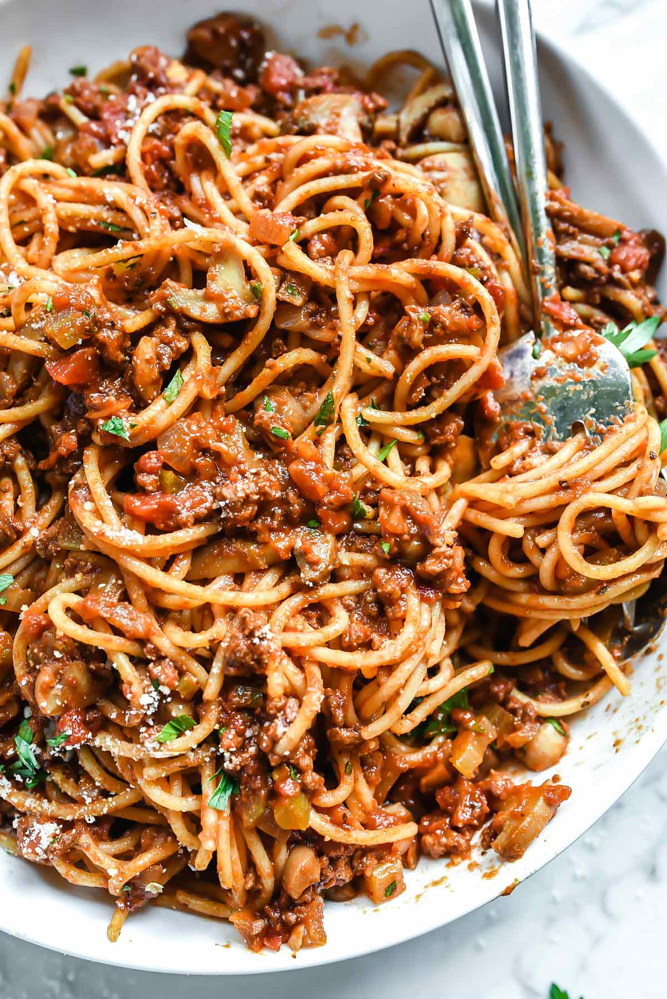

Spaghetti

Description
Spaghetti is one of the simplest dishes a person can make.
Everyone I know who doesn't know how to cook can make spaghetti.
Follow these simple steps to create a great bowl/plate of
some spaghetti.
Ingredients
- 1lb ground beef
- One stalk of celery, chopped
- One diced tomato
- One can of tomato paste
- One can of mushrooms/li>
- Five cloves of garlic
- 1/4 Cup of parsley
- Oregano
- Salt
Steps
- Boil water
- Put noodles in boiling water
- Heat pan and add beef to pan
- In separate pan, add mushrooms, garlic, and tomato sauce
- Chop garlic and add it to sauce after letting it simmer
- Add meat to sauce and stir
- Once noodles are finished, add meat and sauce to pot and stir
- Serve on a plate or bowl, and enjoy!